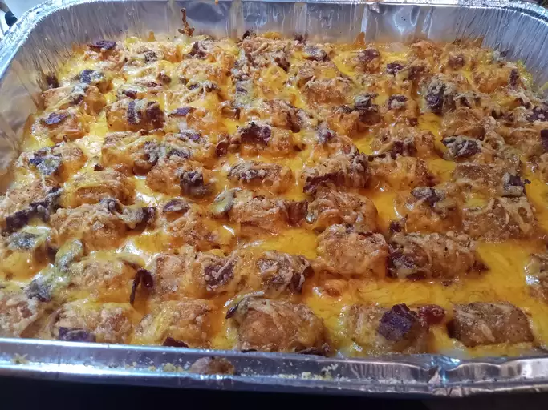

Tater Tot Casserole

Description
This Tater Tot casserole is a quick and easy dinner that
everyone will love. Just four basic ingredients come together
for this comforting dish.
Ingredients
- 1lb Ground Beef
- 1 pinch of salt and pepper
- 1(10.75oz) can Mushroom Soup
- 16oz package of frozen tater tots
- 2 cups shredded cheddar cheese
Steps
- Cook Ground Beef on pan 7-10 minutes.
- Add salt and pepper, mushroom soup while cooking beef.
Mix thoroughly.
- Spread mushroom beef in an oven-safe tray and layer tater
tots over.
- Sprinkle cheddar cheese all over.
- Bake 350° for 30-45 minutes.